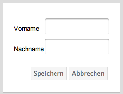

Person anlegen
Um eine neue Person anzulegen klicken Sie auf den Button "Person anlegen". Geben Sie dann im Dialog den Vor- und Nachname der Person ein und klicken Sie anschließend auf den Button "Speichern".
Beide Eingabefelder sind obligatorisch, d.h. zum Erstellen ist die Eingabe eines vollständigen Vor- und Nachnamens notwendig. Fehleingaben quittiert die Anwendung mit einer entsprechenden Fehlermeldung.

Created with the Personal Edition of HelpNDoc: Easily create Help documents